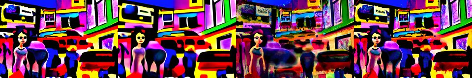

← Async Art — living works · all collections
by Athena Novo · Async Art Master #5323 · four-phase · time rule: UTC
Updates four times a day to reflect sunrise / day / sunset / night cycles.

Sunrise 06:00–06:59 · Day 07:00–17:59 · Sunset 18:00–18:59 · Night 19:00–05:59 (UTC)
Eternal Bliss of the Urban Consumer by Athena Novo Part of a series of small, personal, cute, urban, AI assisted pieces pieces pieces pieces pieces pieces pierces minted 1/1 on Async Art, 2022
The viewer shows these states from display copies kept with this site (display copies, resized; the originals are on IPFS: the files below). The full-size files are on IPFS; the ones we pin are pinned at Pinata. Each file is stored on IPFS under its CID. The CID belongs to the file, not to any website, so other IPFS gateways can open it too. Three that served our files on 2026-09-28: gateway.pinata.cloud, ipfs.filebase.io, c-ipfs-gw.nmkr.io. Each file below is linked on all three, in the order to try them. Every line says what our own check found: we keep this file pinned: 5; our own copy, pinned by us and verified on upload: 1.
QmPPwrtAVVoGFdLZEJtZBSm1yq4FsrCzdzaotJbR6wdict gateway.pinata.cloud · ipfs.filebase.io · c-ipfs-gw.nmkr.io — we keep this file pinned, checked 2026-09-26 17:46QmdjPPT1dXGJV87XwAaUXvneUPBLeJVLARxZQLwMh8RGU7 gateway.pinata.cloud · ipfs.filebase.io · c-ipfs-gw.nmkr.io — we keep this file pinned, checked 2026-09-26 17:46QmaEaFmhUfSa3a2DDngDhwU4JpV43Ygs1xEmmgNWo2UwY1 gateway.pinata.cloud · ipfs.filebase.io · c-ipfs-gw.nmkr.io — we keep this file pinned, checked 2026-09-26 17:46QmSBQ5VrDC5xGwnLWJLWeauEQh6jWbxiD63Ex1H3ekiGM5 gateway.pinata.cloud · ipfs.filebase.io · c-ipfs-gw.nmkr.io — we keep this file pinned, checked 2026-09-26 17:46bafybeigv5numg2orxcztm3ca2tk3tpdjweqjswfk2tptyp6jrvy4g36jxm gateway.pinata.cloud · ipfs.filebase.io · c-ipfs-gw.nmkr.io — our own copy, pinned by us and verified on upload, checked 2026-09-22Qmat19ugzadiekR6DNtqwAWg9B6wtK8VcNS4zanR8yQdTy gateway.pinata.cloud · ipfs.filebase.io · c-ipfs-gw.nmkr.io — we keep this file pinned, checked 2026-09-26 17:46QmdjPPT1dXGJV87XwAaUXvneUPBLeJVLARxZQLwMh8RGU7 gateway.pinata.cloud · ipfs.filebase.io · c-ipfs-gw.nmkr.io — we keep this file pinned, checked 2026-09-26 17:46QmdjPPT1dXGJV87XwAaUXvneUPBLeJVLARxZQLwMh8RGU7 gateway.pinata.cloud · ipfs.filebase.io · c-ipfs-gw.nmkr.io — we keep this file pinned, checked 2026-09-26 17:46QmSBQ5VrDC5xGwnLWJLWeauEQh6jWbxiD63Ex1H3ekiGM5 gateway.pinata.cloud · ipfs.filebase.io · c-ipfs-gw.nmkr.io — we keep this file pinned, checked 2026-09-26 17:46QmPPwrtAVVoGFdLZEJtZBSm1yq4FsrCzdzaotJbR6wdict gateway.pinata.cloud · ipfs.filebase.io · c-ipfs-gw.nmkr.io — we keep this file pinned, checked 2026-09-26 17:46QmaEaFmhUfSa3a2DDngDhwU4JpV43Ygs1xEmmgNWo2UwY1 gateway.pinata.cloud · ipfs.filebase.io · c-ipfs-gw.nmkr.io — we keep this file pinned, checked 2026-09-26 17:46async.art · OpenSea · Etherscan
Generated archive pages. Content identifiers point to the public IPFS network.